如何编写自己的Burp Suite插件
Burp Suite的强大除了自身提供了丰富的可供测试人员使用的功能外，其提供的支持第三方拓展插件的功能也极大地方便使用者编写自己的自定义插件。从上一章节我们已经了解到，Burp Suite支持的插件类型有Java、Python、Ruby三种。无论哪种语言的实现，开发者只要选择自己熟悉的语言，按照接口规范去实现想要的功能即可。下面我们就来看看如何开发一个Burp Extender的插件。 本章讲述的主要内容有：
- API简述
- Burp插件的编写前准备
- Burp插件的编写（Java语言版）
API简述
打开Burp Extender的APIs的Tab页，看到的界面如下图所示： 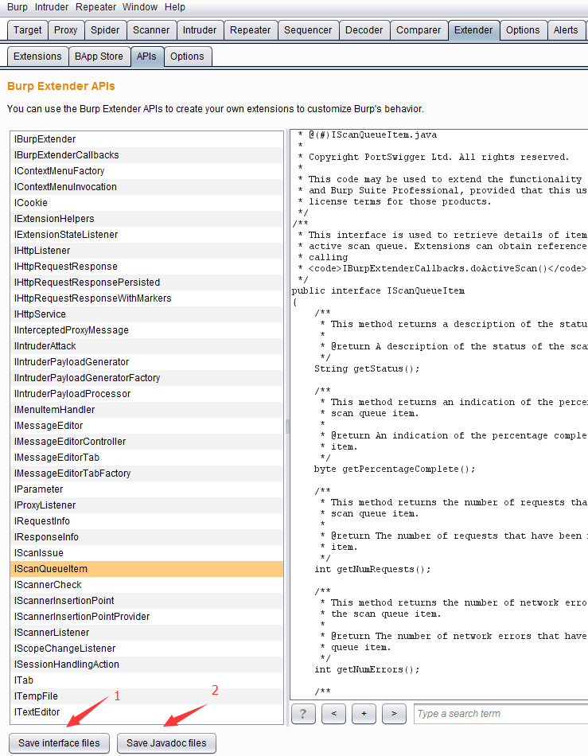 界面由左边的接口类和右边的接口定义和描述构成，其中左边的最下端有两个按钮，图中1按钮为保存接口类，当我们点击保存后，在指定的存储目录下，会生成一系列的java文件，如下图： 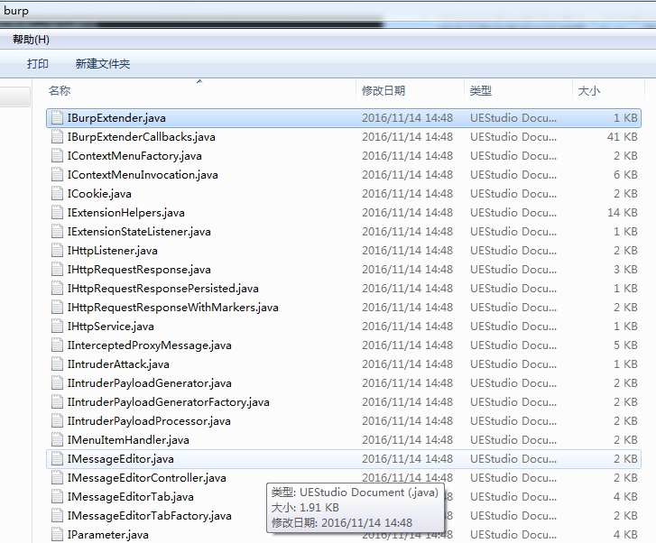 这些文件的内容即为前一张图中右边所示的内容，按照java语言的源文件格式存放的，在编写插件时，可直接将burp包引入Project中使用。而前一张图中2按钮为保存Javadocs,点击保存后，会在存储目录中存放与API相对应的JavaDocs文件。用浏览器打开则如下图所示： 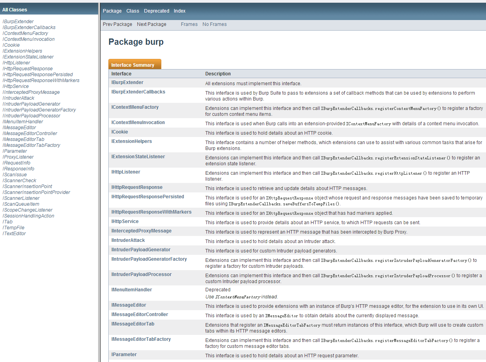
除了上文说的，我们能导出JavaDocs到本地外，Burp官方也提供了一份在线文档，地址为：https://portswigger.net/burp/extender/api/index.html 下面我们根据接口功能的不同对API进行分类。
- 插件入口和帮助接口类：IBurpExtender、IBurpExtenderCallbacks、IExtensionHelpers、IExtensionStateListener
IBurpExtender接口类是Burp插件的入口，所有Burp的插件均需要实现此接口，并且类命名为BurpExtender。 IBurpExtenderCallbacks接口类是IBurpExtender接口的实现类与Burp其他各个组件（Scanner、Intruder、Spider......）、各个通信对象（HttpRequestResponse、HttpService、SessionHandlingAction）之间的纽带。 IExtensionHelpers、IExtensionStateListener这两个接口类是插件的帮助和管理操作的接口定义。
- UI相关接口类：IContextMenuFactory、IContextMenuInvocation、ITab、ITextEditor、IMessageEditor、IMenuItemHandler
这类接口类主要是定义Burp插件的UI显示和动作的处理事件，主要是软件交互中使用。
- Burp工具组件接口类：IInterceptedProxyMessage、IIntruderAttack、IIntruderPayloadGenerator、IIntruderPayloadGeneratorFactory、IIntruderPayloadProcessor、IProxyListener、IScanIssue、IScannerCheck、IScannerInsertionPoint、IScannerInsertionPointProvider、IScannerListener、IScanQueueItem、IScopeChangeListener
这些接口类的功能非常好理解，Burp在接口定义的命名中使用了的见名知意的规范，看到接口类的名称，基本就能猜测出来这个接口是适用于哪个工具组件。
- HTTP消息处理接口类：ICookie、IHttpListener、IHttpRequestResponse、IHttpRequestResponsePersisted、IHttpRequestResponseWithMarkers、IHttpService、IRequestInfo、IParameter、IResponseInfo
这些接口的定义主要是围绕HTTP消息通信过程中涉及的Cookie、Request、Response、Parameter几大消息对象，通过对通信消息头、消息体的数据处理，来达到控制HTTP消息传递的目的。
通过对Burp插件 API的功能划分，我们对API的接口有一个初步的认知，知道在使用某个功能时，可以去哪个接口类中寻找相应的接口定义来做自己的实现。例如。我们想显示一个Tab页界面，那么肯定是要实现ITab接口；如果需要对消息进行编辑修改，则需要实现IMessageEditor接口；需要使用payload生成器，则需要实现IIntruderPayloadGenerator接口。通过接口分类后再找具体的接口定义的方法，可以帮助我们在不太熟悉Burp 插件API的情况下，更快地开发出自己需要的插件。
Burp插件的编写前准备
编写一个完整的Burp插件的大体过程可分为如下三步：
1. 导入Burp插件接口，即通过APIs界面上的【save interface files】的保存动作，将生成的文件连同burp目录一下添加你自己的Java Project中。
2. 编写Burp插件，即通过自己的代码编写，完成自己想实现的功能插件的编码过程。
3. 加载Burp插件，即将上一步编写完成的插件，打包后导入Burp Extensions中，进行试用测试的过程。
其中第一步和第三步对大多数来说，没有难度，主要难度在于如何编码实现Burp的插件。在Burp Suite的官方网站上，插件编写网址：https://portswigger.net/burp/extender/。当我们打开这个网页，会发现网站上有一系列Demo，包含各个编程语言的实现的源代码，这些Demo，按照开发的难度逐步增加的，我们可以点击【Download】链接下载源码进行分析和学习（网页截图如下所示）。 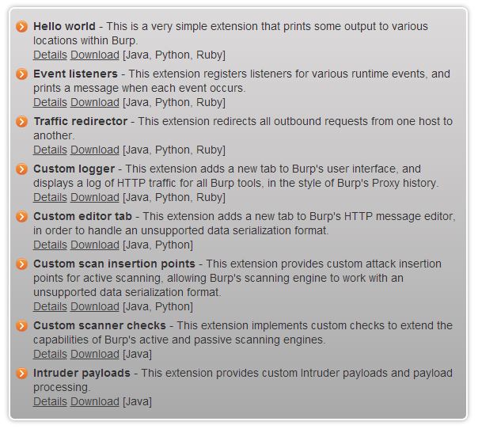
除了这些Demo外，网站还有一篇插件编写入门的文章。网址：http://blog.portswigger.net/2012/12/writing-your-first-burp-extension.html。文章中以Java和Python语言为例，编写一个最简单的Burp插件来熟悉插件的编写流程，阅读这些文章，会给我们编写Burp插件带来极大的帮助。阅读完这篇文章之后，接着官方的归档文件中，会有一些由浅入深讲解插件编写的文章，E文好的同学也可以自己看看，网址点击：http://blog.portswigger.net/2012_12_01_archive.html
如果你没法读懂这些文章，那么我们一起先来看看编写Burp插件的准备工作有哪些，下一章以实例学习如何编写一个Burp插件。通常编写Burp插件的准备工作有：
- 安装JDK------我相信会使用Burp Suite软件的同学都已经安装过JDK了，如果没有安装，请阅读此书的第一章第二章相关章节。
- 安装IDE------一款好的IDE能使得开发效率得到极大的提升，Java语言推荐使用Eclipse或者IntelliJ，Python推荐使用Pycharm或者PyDev，具体每一个IDE软件的安装，请读者自己查找学习。
- 熟悉编程语言的语法-----这是编写插件的基础，如果连基本的语法都不熟悉，编写Burp代码是有一定难度的，接下来的文章中，编者默认为阅读者对语法的掌握程度是熟悉的。
具备了以上三点，把你自己想要实现的插件功能按照软件需求分析的流程在图纸上简单地画出来，我们即可以进入插件开发环节。
Burp插件的编写（Java语言版）
Burp插件的编写语言有Java、Python、Ruby，此处我们以Java为例，来学习编写一个插件。插件要实现的功能是：在http和https请求的header部分添加一个X-Forward-For字段，而字段中的IP地址是随机生成或者指定的，用于绕过使用该字段来防护暴力破解等的场景。插件代码的编写是基于网友bit4woo的Burp插件源码进行二次开发的。源项目github地址：https://github.com/bit4woo/Burp_Extender_random_X-Forward-For，在此向网友bit4woo致谢！
bit4woo网友的源码中实现的插件中仅有X-Forward-For的消息头添加，无插件的UI界面，我们无控制插件是否生效和跟踪http消息通信的直观查看。因此，我们需要实现的插件的功能如下：
- 对使用插件的HTTP请求消息头中添加X-Forward-For字段
- 添加UI界面，直观地感受插件的使用。
- 跟踪HTTP消息，在Burp中使用了哪些组件，请求的URL是什么,请求后的http状态码是否多少。
- 能在插件中控制本插件是否拦截所有的HTTP请求消息，即是否对请求消息头添加X-Forward-For字段。
- 添加的X-Forward-For字段是随机生成还是自己指定的值。
插件编写完成的消息跟踪界面（HistoryLog）如下图： 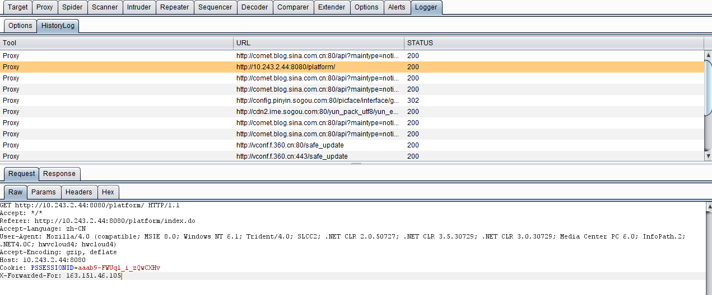 插件的设置界面（Options）如下： 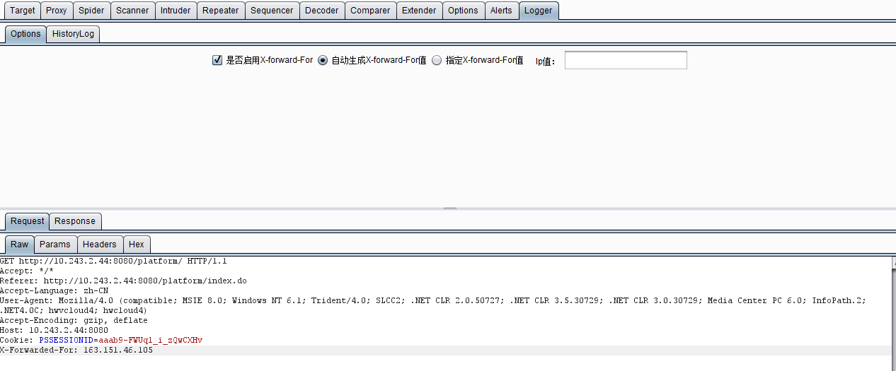
下面我们就来看看具体的编码实现（此处仅仅谈Burp插件的编写，Swing组件的使用不涉及，默认编写者对Swing已熟练掌握）。
1.首先在burp包中定义了一个名称为BurpExtender的java类，必须继承IBurpExtender接口。这个上一个章节已经阐述过了。 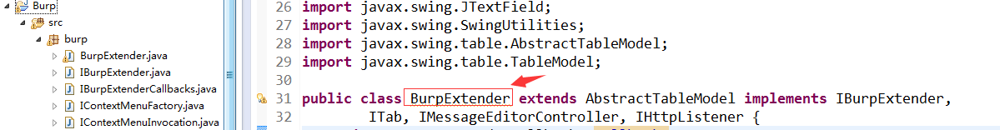 2.因为要在Burp中添加一个tab页作为我们自定义的UI，所以我们需要实现ITab接口；因为要显示请求和响应消息，所以需要实现IMessageEditorController接口；因为要拦截请求的报文，添加X-Forward-For，所以需要实现IHttpListener接口。如上图所示。类定义完成后，导入未实现的方法，则类的UML图如下： 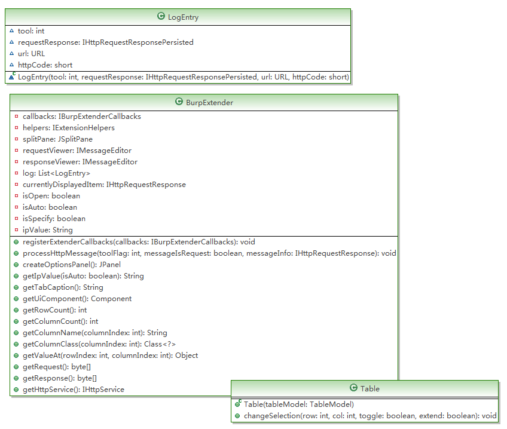 3.接着就是对接口类的方法实现，在UML中，下面两个是需要实现的主要函数：
registerExtenderCallbacks(final IBurpExtenderCallbacks callbacks) 这个函数是Burp插件的入口，在这里主要做了如下工作：1）初始化插件和组件对象 2）设置自定义的UI界面原型。 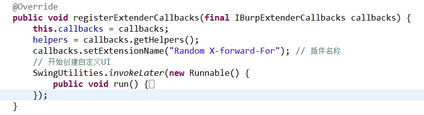 其中创建自定义UI的run函数代码如下： 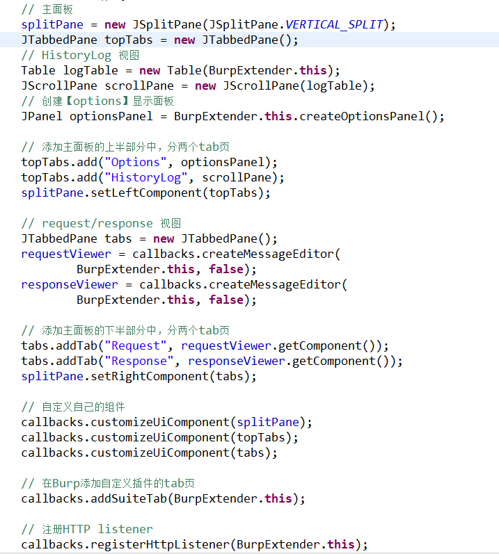 其次是processHttpMessage(int toolFlag, boolean messageIsRequest, IHttpRequestResponse messageInfo) 这个函数的功能主要是对HTTP消息的处理和添加HTTP消息到History列表中。其代码如下： 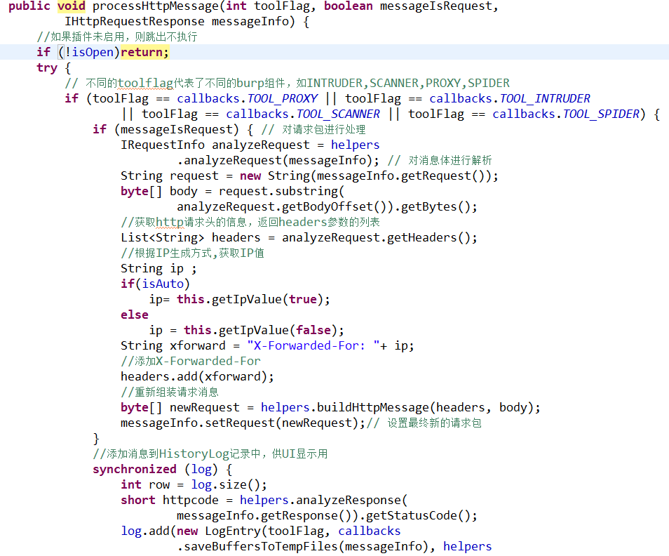 除了这两个函数，其他函数的功能主要是为了UI展示做的各种逻辑操作，此处就不再叙述了，想要了解的同学可以下载本章后面附的源码进行阅读。
4.完成了主要函数的编码之后，插件开发的部分就已经结束了，这时候，我们只需要把代码导出成jar把，加载到Burp Extensions中测试运行即可。 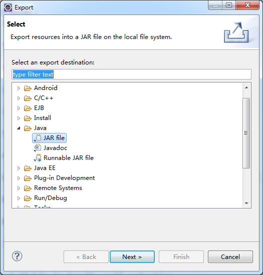
5.本插件和其源码下载地址
下载完毕后，你可以把src中的两个java类放入从APIs 标签页中导入的接口类所在的burp包中，编译后打包jar运行；也可以直接把下载的X-forward-For.jar导入Burp拓展插件中，即可看到插件的运行界面。